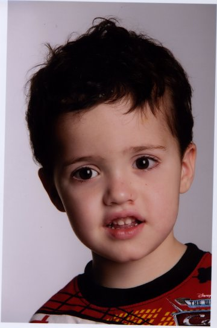

[Home][Mom's Home] [Dad's Home] [Photo Album] [Scrapbook]
(Last updated 2008-06-24)

Our plans were to start trying for a baby in August/September 2005 (My last year of university). In May 2004, I went off pill and noticed I was no longer menstruating. Went to the Doctor and he referred me to a Gynaecologist. I could only get an appointment in January 2005. I started praying that I wouldn't struggle to fall pregnant. When I saw the Doctor, He diagnosed me with Poly Cystic Ovary Syndrome. He put me on medication and said I would probably need help to fall pregnant. In April 2005 I started a prayer group for the other ladies in our church who were struggling to fall pregnant too.
On the 2 June 2005, William and I were attending a prayer meeting in Sasolburg, when this lady comes up to us and asks us why we have no children. I felt on an edge, and when I was still struggling to think of how to explain, she says to us that God says three months. In three months we will have a baby. She counted on her fingers, June, July, August. That night we went home, prayed together and told God we accept this baby. We gave thanks to Him and praised His name. We also asked for conformation from Him. The next day it seems my hormones were working perfectly as everything was as it should be.
That same night I had a dream I gave birth to a boy called Elijah James. I remember William being a bit hesitant on the name. Over the next three months I continued to get dreams, visions as well as Scripture pertaining to Elijah from 1 Kings. We were sure that we were going to have our little boy.
On the 14 August 2005, I was praying, asking God for scripture for a prayer meeting we were attending that morning. He gave me Mark 17 verse 12 "Elijah has come". I immediately gave thanks and told William. It was quite a exciting wait for the two weeks to pass when I could get a test done.
On the 29 August I felt that I had waited long enough. William wanted me to wait another 2 days, but I thought I knew better. I took the test and it was negative. I ranted and raved and never thought otherwise. My mind was in confusion. The next Wednesday (7 August 2005) I started to ask God forgiveness for my unbelief. I asked God for understanding. He gave me scripture in 1 Kings, where Elijah send the servant out 7 times to check for rain and on the 7th time there were clouds. I felt the Holy spirit leading me to get another test. I did a test and it was positive. I remember being in the Kitchen and almost falling on my knees in thanks. I had a vision where God took me back to the day I prayed asking not to struggle to fall pregnant.
In telling this story, I hope that whoever reads it will be blessed and Know that God answers prayer. I also needed to read this to myself so that I would also remember all that God has done for us.
Glory Be to God!
Psalm 28v7 "Yahweh is my strength and my shield. My heart has trusted in him, and I am helped. Therefore my heart greatly rejoices. With my song I will thank him."